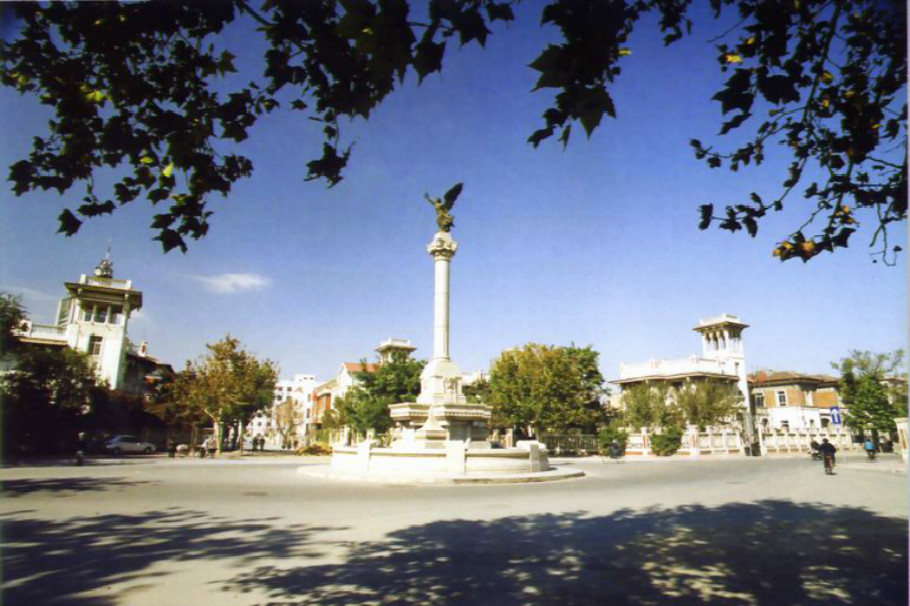

走进意式风情街
可是吃的都没什么特色，但是晚上比较热闹。是摄影爱好者拍照的好地方，意式风情街还是非常好看的。建筑很好看，文化气息很浓，而且很精致的说。商业化太浓了。

简单介绍
位于天津市河北区，原意大利租界，由河北区五经路、河北区博爱道、河北区胜利路、河北区建国道这四条河北区的道路合围起来的四方形地区统称为意大利风情区，目前保存完整的欧洲建筑近200余栋。 天津意式风情街以体现浓郁的意大利风情为宗旨，将风情区建设成为集旅游、商贸、休闲、娱乐和文博为一体的综合性多功能区。 景区紧挨着海河，有大量意大利风情建筑。逢春夏秋三季，天津的意大利老租界的新意街变成了不夜城。这里的意大利风格的小洋楼成群，和解放路的银行大厦截然不同，让你感觉彷佛置身于马可。波罗故乡的古老小镇，温馨又随和。 其实，街区中心喷水柱的圆形广场的名字，就叫马可·波罗。在意大利老租界里，还有梁启超的饮冰室、曹禺故居、李叔同故居、袁世凯及冯国璋的府邸等。白天游人不多，很适合参观拍照。
- 景点类型：历史建筑
- 最佳季节：四季皆宜。春游盘山、暑夏畅饮、金秋美景、冬享温泉。春、秋两季气候温和，是游天津的大好季节。
- 建议游玩：2-3小时
- 门票：免费
- 开放时间：全天开放
- 地址：天津河北区